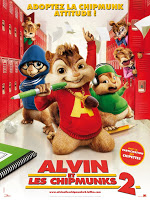

|  | En Alvin y las ardillas 2, Alvin, Simon y Theodore dejan de ser temporalmente estrellas del pop para incorporarse al instituto. No resulta una transición fácil, ya que los Munk tienen que pasar por las distintas pruebas y tribulaciones de la vida escolar –matones, grupillos, bromas, un director severo– que todos los estudiantes experimentan. De forma más significativa, sus aventuras estudiantiles representan una auténtica prueba para su vínculo familiar. Alvin, Simon y Theodore deben luchar en la batalla de bandas, donde su máximo rival es un grupo femenino, The Chippettes (Brittany, Eleanor and Jeanette). Por los disparates que Alvin hizo en la actuación, Dave acaba postrado en un hospital de París. Mientras se recupera, su primo Toby recibe el encargo de cuidar de las Ardillas. Zachary Levi, que interpreta a Toby, es popularmente conocido por protagonizar al héroe que da nombre a la serie de comedia y aventura de la NBC "Chuck" –un sesudo empleado de una compañía electrónica que accidentalmente se ve convetido en espía–. En ALVIN Y LAS ARDILLAS 2, el Toby que interpreta Levi es todavía más friki que el superlistillo Chuck; Toby es un fanático de los videojuegos que ignora totalmente lo que es cuidar niños, y Alvin, con tendencia a dar problemas, Simon y Theodore ¡no le ponen las cosas nada fáciles!. |